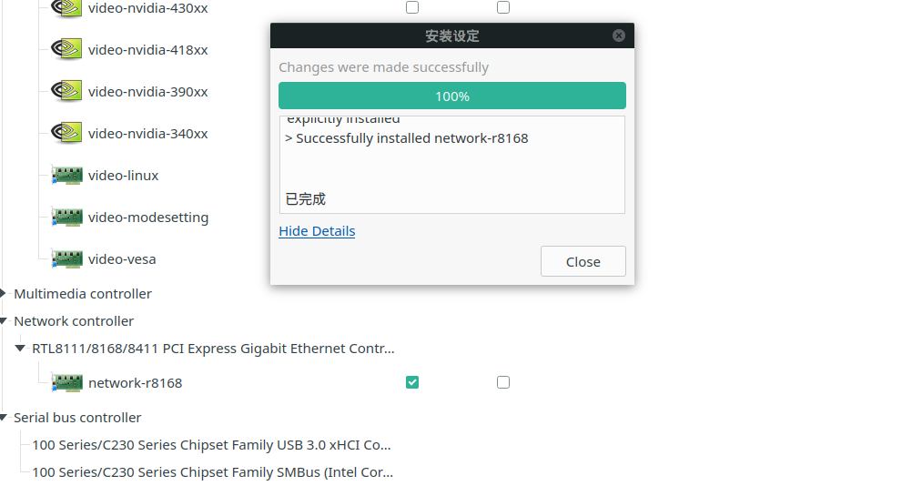
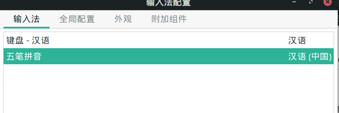
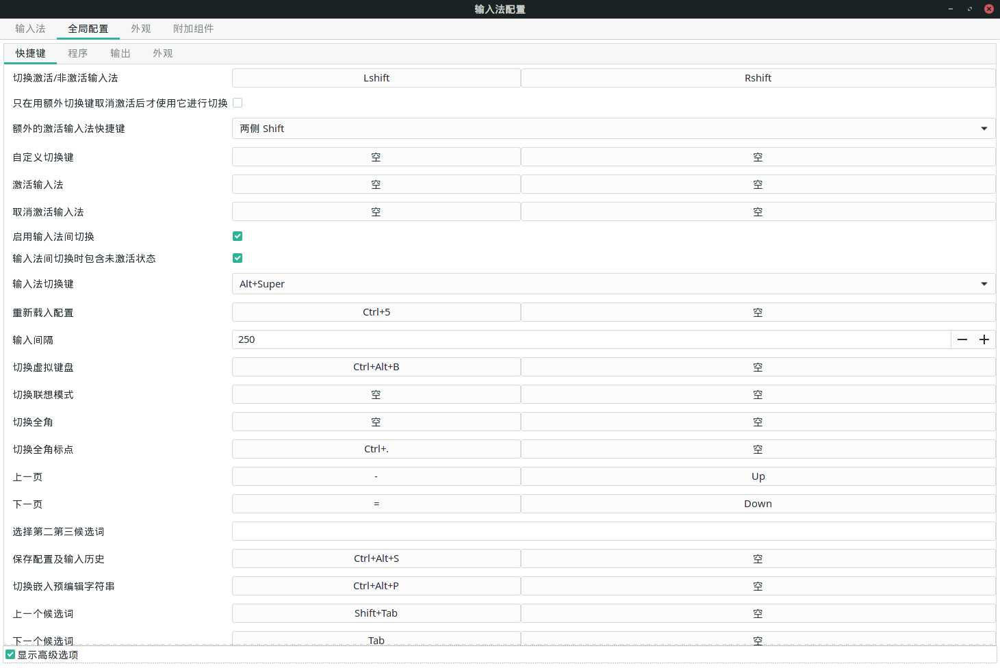

SSD 备忘与趣事
引言
办公室电脑原来的机械硬盘实在有点不行了, 换了一块新的 SSD.
本来想买个再好一点的, 但是主板有只有 sata 接口. 虽说再折腾一下也可以换更高级的 SSD, 但是也没(有)那(点)么(懒)多(啊)时(啊)间.
我发现 11 月份没有写新的博客. 就这样水?一篇吧! 其实这个可以合在之前那篇 manjaro 装机 note 里的的.
买 SSD
我之前只知道 SSD 分好几种, 具体也没怎么研究过. 要自己买当然要拆开看看主板上有什么接口. 哎, 自己看了半天也不知道哪个是 SSD接口. 把图片发给店家, 立马知道要买什么样的了!
原来主板上有空的 sata 接口, 而且之前我也没有意识到 SSD 是用线与主板相连的, 还以为是像内存一样直接插上的, 怪不得没有找到插口.
在卖家的帮忙下(吐嘈一下, 东芝改名叫铠侠, 觉得不如原来好听) , 买了 SSD 和 sata 线.
装 SSD
很快啊, 新的 SSD 第二天就来了. 一拿的感觉是: 轻!
直接插上 sata 线连上, 开机! 竟然没有识别. 思考为什么会这样的时候, 瞟了一眼说明说: SSD 还需要接电源的! 看来"不用读系列"有时候还是要看的. 我说这硬盘上怎么有两块呲出来的.
可是我并没有买电源线. 就在我一边责怪卖家没有告诉我, 一边又想又得再等一天快递了, 一边又想从哪个废旧电脑上拆一根时, 突然又想到光驱也是 sata 线连到主板上的, 应该也有电源线. 机智如我, 直接拔下来接到了 SSD 上. 开机, 开不了机了, 原来那里接的是机械硬盘. 又一次偶然发现, 这根电源线中间还伸出一个头. 不错, 接上, 完美解决!
安装 SSD manjaro
记录一下注意的点. Bootloader 选到 KIOXIA (新 SSD ) 上, BIOS select device 也先 KIOXIA.
幽灵般的网络
在 SSD 上装 win10 和 manjaro 很顺利. 但接下来有一件事我至今不明白是为什么.
win10 是有网的. 然后装 manjaro, 打开之后没网. 心想是网络配置不对. 然后打开机械硬盘上的 manjaro 对一下配置. 再重启进 SSD manjaro, 突然有网了. 虽然奇怪, 但问题自己好了.
在 SSD manjaro 上进行了一些设置后, 重启, 又没网了, 啊! 再重启进机械硬盘 manjaro, 啊, 机械 manjaro 也没网了, 很奇怪啊, 之前 机械 manjaro 用了很久, 也没有出现连不上网的情况. 怀疑是办公室的网络出问题了, 进 SSD win10, 也没网, 更加断定我的判断.
问了一下别人, 有网?
那是我这根线上的路由器被我搞冲突了? 但是 yf 的还有网, 而且又边了它的网线, 也连不上网, 它的电脑却能连上. 那就是我电脑的问题了.
应该也不是软件的问题, 因为无论新旧, 四个系统每个都边不上网.
硬件问题, 难道是我装 SSD 的时候碰到了什么? 不应该啊! 有点迷惑!
在 yf 提醒下, 将 SSD 拆下来, 进机械 win10, 进不去了... 进机械 manjaro, 啊, 竟然能连上, 真的太奇怪了! 难道接上 SSD 导致其它部分供电不足?
又把 SSD 装回去, 又能连上了...
从 SSD manjaro 重启再进 SSD manjaro 又边不上了.
再从 SSD manjaro 重启进 SSD win10 可以.
再从 SSD win10 进 SSD manjaro, 又可以了.
从 SSD manjaro 重启再进 SSD manjaro 又边不上了.
再从 SSD manjaro 重启进 SSD win10 可以.
再从 SSD win10 进 SSD manjaro, 又可以了.
看来 SSD manjaro 的网络需要 SSD win10 的唤醒...
又想起之前对机械和 SSD manjaro 配置的时候网上驱动不太一样, 但是重启后好了, 没有在意. 现在又边不上了. 这就把驱动弄地一样. 好了
一切都好了, 是网卡驱动的问题. 之前 cy 机械硬盘 manjaro 连不上网估计也是这个问题.
但是!!! 之前四个系统都连不上的原因我依然不知道, 我能想到的就只能是... 想不到是为什么 . 太奇怪了!
附网上安装: 右键安装

wayland 换 xorg
奇怪的网络问题让我对了机械和 SSD 的 gnome 版本, 发现新的 manjaro 包默认是 wayland. 我突然意识到之前给 cy 的机械硬盘装 manjaro 后闪屏的问题, 很有可能也是用了 wayland.
换回 Xorg 直接安装 Xorg 包就好了
sudo pacman -S xorg
登陆选 xorg 的 gnome 即可.
输入法
arch wiki 关于中文输入法的部分升级了, 存放环境变量的文件有了变化, 详见: https://wiki.archlinux.org/index.php/Fcitx_(%E7%AE%80%E4%BD%93%E4%B8%AD%E6%96%87)#.E5.AE.89.E8.A3.85
还是比较习惯之前的快捷键设置, 截图记录.


evince 中文问题
之前装 xpdf 就好了, 可这次不好使了. 这样, 也促使我找到了问题的原因: https://blog.csdn.net/nevasun/article/details/7303529 okular, epdfview, evince的pdf功能均由xpdf的分支poppler提供，poppler从fontconfig的配置文件中读取字体取代pdf里的字体。
这次安装 poppler-data 就好了
emacs 开启卡顿
看卡顿的时间, 卡顿完字体变大, 推测是 cnfonts 的问题, 注释掉就好了
;; 字体设置
;;(require 'cnfonts)
;; 让 cnfonts 随着 Emacs 自动生效。
;;(cnfonts-enable)
;; 让 spacemacs mode-line 中的 Unicode 图标正确显示。
;;(cnfonts-set-spacemacs-fallback-fonts)
修改默认 shell
新的 manjaro 包默认的 shell 也改成了 zsh. 不过我还是习惯原来的 bash. 改下面的文件就可以:
sudo emacs /etc/passwd
GRUB theme
新的 manjaro 包里也没有了 GRUB theme, 有点不好看, 可以直接 yaourt grub theme 找到 manjaro 的 grub theme 安装就好.
开机挂载
旧的机械硬盘可以设置开机自动挂到某个目录, 方法是修改 /etc/fstab , 比如增加记录
/dev/sda5 /docu ntfs defaults 0 0
对 manjaro 版本时用到的命令
lsb_release -a
对 hexo
hexo 貌似对新版的 node 支持不友好, 需要将 node 进行版本回退才可以正常 deploy.
用 n 来管理和切换 node 版本.
查看 node 版本
node -v
安装
npm install -g n
下载 hexo 可用的 node 版本 13.14.0
sudo n 13.14.0
切换版本是与上面相同的命令
或许有一天, 我该把 blog 换到 pelican 上面, 毕竟比较熟悉语言.
VirtualBox
不仅需要安装 virtualbox, 还需要安装宿主机对应内核的 host modules. umane -a 查看 Linux 内核版本, 比如我的结果是 5.8.18, 所以还要安装 linux58-virtualbox-host-modules .
两个安装好之后, 还要激活模块(这个在安装 virtualbox 时有过一行提示)
sudo modprobe vboxdrv
之后即可正常使用